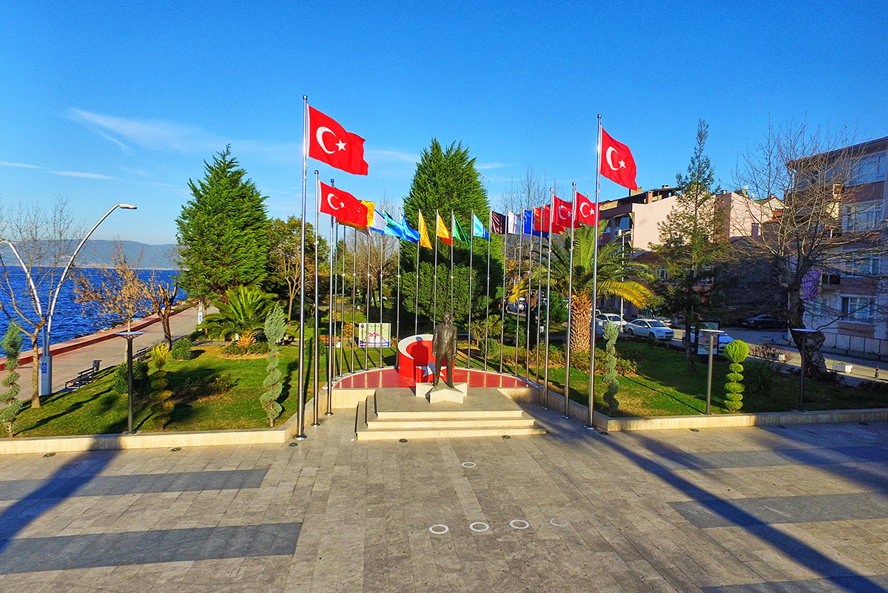
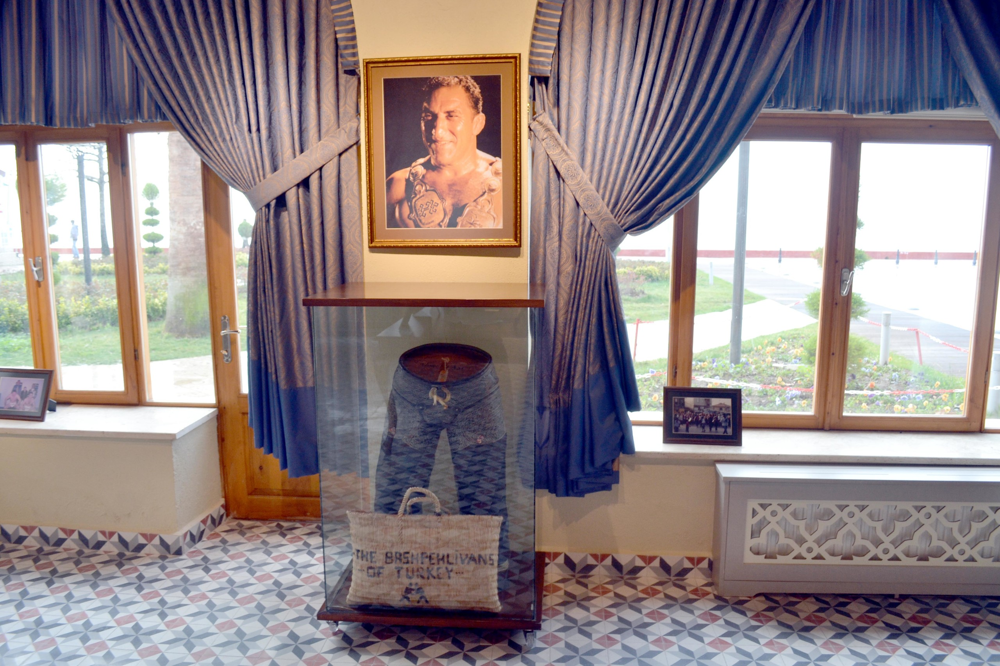

Ulu Önder Mustafa Kemal Atatürk 24 Temmuz 1933 tarihinde Acar isimli Motoruyla Deniz yolu ile ilçemize teşrif etmişlerdir.
Gazi Mustafa Kemal; İlçe Askerlik şubesindeki incelemeleri sırasında, 4 Kez işgale uğradığı halde bağımsızlık mücadelesinden vazgeçmeyen, Anadolu’nun pek çok yerinde olduğu gibi Ya İstiklal Ya Ölüm parolası ile kenetlenerek, Kuvayı millîye ruhuyla direnişe geçen Karamürsel Halkı için şu onur verici sözleri söylemiştir. “Karamürsel Halkı, İstiklal savaşında çok çalışmış, kadını ve erkeği ile cepheye silah ve cephane taşımış, işgal hareketlerine karşı üstün bir kahramanlıkla mübadelede bulunmuştur. Bu sebeple burayı ziyaret etmekten son derece memnunum”
Tüm hakları saklıdır 2022
Designed by Cansu Arslanalp